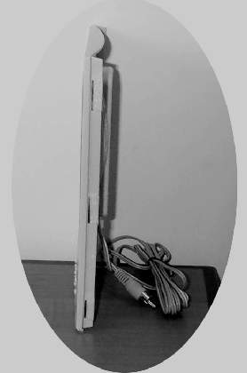

|
|
| 当前位置：电脑报电子版 > 1999 年 > 42 期 > 硬件周刊 > 全面认识平板音箱 |
| 《 全面认识平板音箱 》 |
| 近一段时间，平板音箱的广告频繁出现在各种媒体上，大有替代传统多媒体音箱的架势，平板音箱到底与传统音箱有什么不同，带来什么样的改进呢？下面让我们来看一看。
一、平板音箱的优点 平板式喇叭在世界上主要有两大系统：一种是英国的NXT系统，另一种是澳大利亚的平板喇叭系统。现在NXT系统已处于主流地位，不仅在音质、成本方面有较为领先的优势，而且拥有多项世界专利。目前，用平板式喇叭构成的平板音箱，的确有不少优点。1．指向性非常好。一般用传统喇叭构成的音箱，指向性很差，你必须站在音箱的前面，才能听到较完美的声音，特别是高音的部分；而如果你站在音箱的侧面，可能有些背景或伴奏声音就听不到了；如果你站在音箱的背面，可能那甜美的歌声，已经变成了不愿意欣赏的声音了。而平板式音箱却没有上述的问题存在，无论你站在任何位置，都能欣赏到完整、真实的声音。 2．声音衰减较小。传统的音箱，当你靠得太近会发现声音很大，而距离稍远时，你又觉得声音小了许多。而平板式音箱没有以上问题，无论你是在近距离还是稍远距离，所听到的声音大小并没有太大的差异。 3．声音的保真度较高。一般传统的喇叭，它的形状为圆锥形，当它振动发出声音时，往往将声音集中在喉部，经过压缩，再传播出来，而人们所听到的声音，是经过压缩而变形的声音。平板式喇叭就不会有上述问题，只因为人们听太多变形的声音，所以一旦接触到平板式喇叭时，开始聆听时会觉得它很平凡，随后却往往被它自然的表现而深深吸引。 4．外形超薄，不占空间。由于平板式喇叭的特殊构造，构成的音箱在任何位置均可摆放，不像传统音箱，因摆放位置的不同，听到的效果也大不相同。 二、平板音箱的设计特点 由于构造的不同，平板音箱在设计上与传统音箱也存在很多的不同。平板式音箱的设计重点有四项：驱动体（Exciter）、振动板（Cone）、振动位置与悬吊系统（Suspension）、后壳（Rear Box）。 1．驱动体。它相当于平板音箱的一个心脏。驱动器的设计要点是它的有效冲程非常的小，一般不超过2m/m2；其次是音圈部分不能太重，否则高频部分会有较为严重的失真。设计要求重量要轻，体积要小，磁力需大。基于以上因素，我们采用高磁的材料，一般磁束密度要大于10000高斯以上，才能有较好的表现力。有时为了提高输出，使用两个驱动体或四个驱动体来提升输出音压，而且使用多个驱动体，能够获得更佳的频响曲线，至于使用几个驱动体取决于振动板面积的大小和重量。 2．振动板。它就像人的声带一样，对于音色、声音的大小、声音的平整度起到决定性作用，因此在平板式音箱中占有仅次于驱动体（Exciter）的重要作用。振动板的材料，大致可以分成：纸浆类、三明治（层板）、蜂巢类。三大类中以蜂巢类的效果为上乘，但是，相对的成本也最高；其次为纸浆类，再次为三明治类，最差的为PCB板。有的厂家为了大家能够欣赏到平板式音箱的表现，还特别开发出了复合式纸盆，它的特性是有纸盆的音色（Hi－Fi的喇叭，到目前为止，还是纸盆类）、刚性大、重量轻，另外还有抗高温，抗潮湿，不变形的特性，而且价格大众化。除了以上因素外，振动板的设计须考虑到结构尺寸。依照NXT公司的研究，NXT制订出了两种最佳比例的设计：黄金比（0.88比1）和银比（1比1.414）。按照以上两种比例，可以获得最佳的频响曲线。 3．悬吊系统（Suspension）。平板式音箱的振动原理与一般传统喇叭的振动原理完全不同。一般的传统喇叭，它采用的活塞式的振动方式；而平板式喇叭的振动则采用随机振动的方式，因此它的最低共振频率并非只有一个点，而有十几个点，设计良好的平板式喇叭，甚至有二十几个点。而且它的驱动点并不是在正中央，因为正中央并不能获得最大声压和最平滑的频响曲线，而是在节振动的最佳位置（此振动点的设计为NXT公司的专利），另外再加上1:9比例的四个悬吊点（此悬吊点的设计也是NXT公司的专利）组成合理的悬吊系统。 4．后壳。后壳的设计必须考虑到在后壳上开口来增加声波的绕射问题，因为平板式喇叭是波浪型振动。同样的它的背面会产生相同的声压（只是相位不同），所以必须开成条状的窗口来增加声辐射，这样一来也就具有更好的指向性，不受因为聆听者位置的不同而产生不同的声音效果。 讲了平板式音箱的这么多优点，看起来平板音箱好像非常完美无缺，实际上平板音箱同样存在致命缺点也是唯一的缺点：它的设计采用波浪式的振动方式，所能推动的空气量不足，因而它的低频量显得不够。如果真要发挥它的性能表现，必须与它搭配一组低音炮，否则表现不会比一般的木质音箱更好。 （深圳 云长） |
| 下载本期推荐软件 | 页 首 |
| 《电脑报》版权所有，电脑报网站编辑部设计制作发布 |